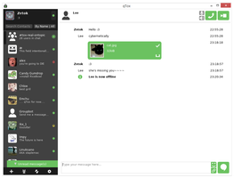
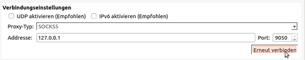

Tox
Dieser Artikel wurde für die folgenden Ubuntu-Versionen getestet:
Ubuntu 14.04 Trusty Tahr
Zum Verständnis dieses Artikels sind folgende Seiten hilfreich:
|  |
| qTox |
Tox  ist eine Peer-to-Peer-Messaging-Software, die sich momentan noch in der Entwicklung befindet. Die Arbeit an diesem Projekt begann im Jahr 2013 als Reaktion auf die globale Massenüberwachung durch Geheimdienste mit dem Ziel, eine freie und quelloffene Skype-Alternative zu schaffen.
ist eine Peer-to-Peer-Messaging-Software, die sich momentan noch in der Entwicklung befindet. Die Arbeit an diesem Projekt begann im Jahr 2013 als Reaktion auf die globale Massenüberwachung durch Geheimdienste mit dem Ziel, eine freie und quelloffene Skype-Alternative zu schaffen.
Im Gegensatz zu anderen Messaging-Diensten bietet Tox standardmäßig eine Ende-zu-Ende-Verschlüsselung, die auch nicht abgeschaltet werden kann. Tox ist so konstruiert, eine möglichst sichere und dennoch einfach zu nutzende Kommunikationsinfrastruktur zu bieten.
Wenn die Entwicklung abgeschlossen ist, soll Tox u. a. folgende Funktionen bieten:
Text-Nachrichten
Audio- & Video-Chatting
Dateiversand
Gruppenchats
Offline-Messaging
Multi-Device-Support
Achtung!
Tox und Clientprogramme befinden sich in der Entwicklung. Aus diesem Grund muss mit Programmfehlern und Sicherheitslücken gerechnet werden.
Architektur¶
Core¶
Streng genommen ist die Tox-Software, auch libtoxcore genannt, nur eine Bibliothek, die ihre Funktionen (Nachrichtenversand, Verschlüsselung, etc.) sogenannten Clients zur Verfügung stellt. Somit könnte Tox theoretisch beispielsweise auch mit dem Instant-Messaging-Programm Pidgin genutzt werden.
Da die Entwicklung der Library stagnierte, wurde der ursprüngliche Kern irungentoo/toxcore im Jahr 2016 „geforkt“. Die aktuelle Entwicklung kann jetzt auf TokTok/c-toxcore weiter verfolgt werden.
Clients¶
Allerdings gibt es speziell für Tox entwickelte grafische Oberflächen, die perfekt auf die Funktionsweise von Tox ausgerichtet sind und genutzt werden sollten. Sie unterscheiden sich hauptsächlich hinsichtlich der unterstützten Tox-Features, des Designs und für welche Betriebssysteme sie geeignet sind.
| Verbreitete und aktiv in der Entwicklung befindende Tox-Clients | |||
| Name | Betriebssystem | Programmiersprache | Beschreibung |
| qTox | Windows, OS X, Linux, BSD | C++ | Aktuell der am weitesten entwickelte Tox-Client, der auch die meisten Features unterstützt. |
| µTox | Windows, OS X, Linux, BSD | C | Leichtgewichtiger als qTox, aber mit weniger Features. |
| Toxic | OS X, Linux, BSD | C | Toxic ist ein spezieller Client für die Kommandozeile. |
| Antidote | Apple iOS 8.0+ | Swift | Für das mobile Betriebssystem der Apple-Geräte. |
| Antox | Android 4+ | Scala | Client für das Smartphone-Betriebssystem Android. |
Im Tox-Wiki findet man eine genaue Auflistung , welche Features von welchem Client momentan unterstützt werden.
qTox¶
Da es viele unterschiedliche Tox-Clients und Installationsmöglichkeiten gibt, beschränken sich die Hinweise zur Installation auf den am weitesten verbreiteten Client qTox .
Um aus der Fremdquelle zu installieren, muss man unabhängig von der Ubuntu-Version folgenden Befehl ausführen:
echo "deb http://download.opensuse.org/repositories/home:/antonbatenev:/tox/xUbuntu_$(lsb_release -rs)/ /" | sudo tee /etc/apt/sources.list.d/qtox.list
Hinweis!
Zusätzliche Fremdquellen können das System gefährden.
Anmerkung: Das OBS-Repository unterstützt nicht zwangsläufig alle Ubuntu-Versionen. Weitere Informationen zu den aktuell unterstützten Distributionen und Versionen finden sich im OBS-Repository .
Um die Fremdquelle zu authentifizieren, muss man den Signierungsschlüssel mit Hilfe des folgenden Befehls herunterladen und in der Paketverwaltung hinzufügen:
wget -qO - http://download.opensuse.org/repositories/home:antonbatenev:tox/xUbuntu_$(lsb_release -rs)/Release.key | sudo apt-key add -
Nach dem Aktualisieren der Paketquellen lässt sich das folgende Paket über die Paketverwaltung installieren [2]:
qtox (Fremdquelle)
 mit apturl
mit apturl
Paketliste zum Kopieren:
sudo apt-get install qtox
sudo aptitude install qtox
Wenn man qTox selbst kompilieren oder andere Clients verwenden möchte, findet man weitere Informationen zur Installation auf den jeweiligen GitHub-Seiten oder im Tox-Wiki .
Technische Details¶
Da Tox ein Peer-to-Peer-Messaging-Programm ist, werden direkte Verbindungen mit den Gesprächspartnern aufgebaut. Durch diese Konzeption ist man unabhängig von fremden Anbietern und Metadaten können nicht so leicht gesammelt werden, da keine zentralen Server eingesetzt werden. Portweiterleitungen sind in der Regel nicht nötig, da das Hole Punching-Verfahren eingesetzt wird.
Verschlüsselung¶
Die Tox-Verschlüsselung bietet, wie auch OTR, folgende Eigenschaften:
Verschlüsselung (Encryption) - niemand sonst kann die Mitteilungen mitlesen
Beglaubigung (Authentication) - man kann sich sicher sein, dass der Empfänger derjenige ist, für den man ihn hält
Abstreitbarkeit (Deniability) - verschlüsselte Nachrichten enthalten keine digitale Unterschrift, die Rückschlüsse auf die Identität ermöglichen. Jeder kann Mitteilungen im Nachhinein so manipulieren, dass sie so aussehen, als würden sie von jemand anderem stammen. Dennoch kann man während eines Gespräches sicher sein, dass die Mitteilungen beglaubigt und unverändert sind.
Folgenlosigkeit (Perfect Forward Secrecy) - wenn man die Kontrolle über einen privaten Schlüssel verliert, können keine bisher getätigte Gespräche kompromittiert werden
Laut Angaben im Tox-Wiki werden hierfür Curve25519 (Schlüsselaustausch), Salsa20 (Verschlüsselung) und Poly1305-AES (MAC) verwendet.
Anonymität¶
Das Tox-Protokoll bietet standardmäßig keine Verschleierung der IP-Adressen, demzufolge ist keine Anonymität gewährleistet. Allerdings kann auf Software wie z. B. Tor zurückgegriffen werden, um anonym kommunizieren zu können.
|  |
| Anonym kommunizieren mit qTox via Tor |
Am Beispiel von qTox ist dies folgendermaßen zu erreichen:
Tor installieren und starten
Die qTox-Einstellungen öffnen
"Allgemeines -> Verbindungseinstellungen"
Sicherstellen, dass UDP deaktiviert ist
Sicherstellen, dass IPv6 deaktiviert ist
Als Proxy-Typ "SOCKS5" auswählen
Als IP-Adresse
127.0.0.1und Port9050verwenden
Auf "Erneut verbinden" klicken
Tox-IDs¶
Wenn man Tox verwendet, gibt es keinen Benutzernamen, wie man es von anderen Programmen kennt. Als Ersatz gibt es die Tox-ID. Sie wird automatisch beim ersten Programmstart generiert und besteht aus insgesamt 76 hexadezimalen Zeichen.
| Bestandteile einer Tox-ID |
Möchte man also mit jemandem via Tox kommunizieren, muss man dessen Tox-ID kennen und eine Freundschaftsanfrage an diese senden. Um mögliches Spam-Aufkommen zu vermeiden, beinhaltet die Tox-ID einen NoSpam-Wert, der auf Wunsch verändert werden kann. Dadurch sind Freundschaftsanfragen an die dann alte Tox-ID nicht mehr möglich.
Fragen und Antworten¶
Wann wird Tox fertig sein?
Es gibt keinen Zeitplan, wann Tox als Stable-Version erscheinen wird.
Kann man Tox bereits verwenden, wenn man auf sichere Kommunikation angewiesen ist?
Tox ist teilweise zwar schon relativ gut benutzbar, die Software befindet sich allerdings noch in der Entwicklung. Demzufolge gibt es noch genügend Fehler, die korrigiert werden müssen. Auch kritische Sicherheitslücken können nicht ausgeschlossen werden. Aus diesem Grund sollte man auf bewährte alternative Kommunikationsprogramme zurückgreifen, wenn man auf Sicherheit und Datenschutz angewiesen ist.
Kann man Tox auf verschiedenen Geräten gleichzeitig verwenden?
Momentan noch nicht. Es ist allerdings geplant, diese Funktion zu implementieren. Man kann aber bereits das eigene Tox-Profil auf andere Geräte exportieren und auch dort benutzen. Wie dies funktioniert, ist im Tox-Wiki beschrieben.
Was passiert, wenn man einen Kontakt aus seiner Liste löscht?
Derjenige Benutzer wird davon in der Regel nichts mitbekommen. Es sieht für ihn so aus, als wenn man Tox schließt und offline geht. Um wieder kommunizieren zu können, muss der Kontakt allerdings wieder hinzugefügt werden.
- Erstellt mit Inyoka
-
 2004 – 2017 ubuntuusers.de • Einige Rechte vorbehalten
2004 – 2017 ubuntuusers.de • Einige Rechte vorbehalten
Lizenz • Kontakt • Datenschutz • Impressum • Serverstatus -
Serverhousing gespendet von